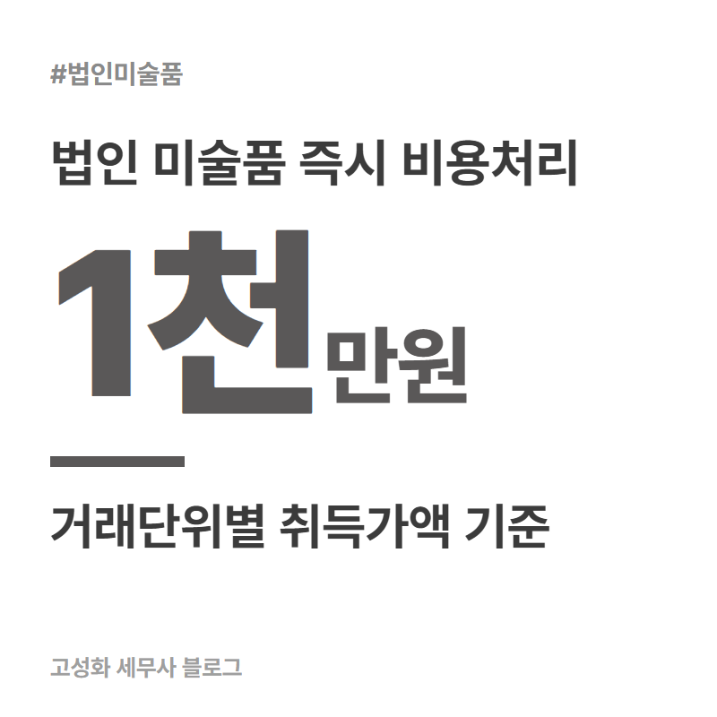
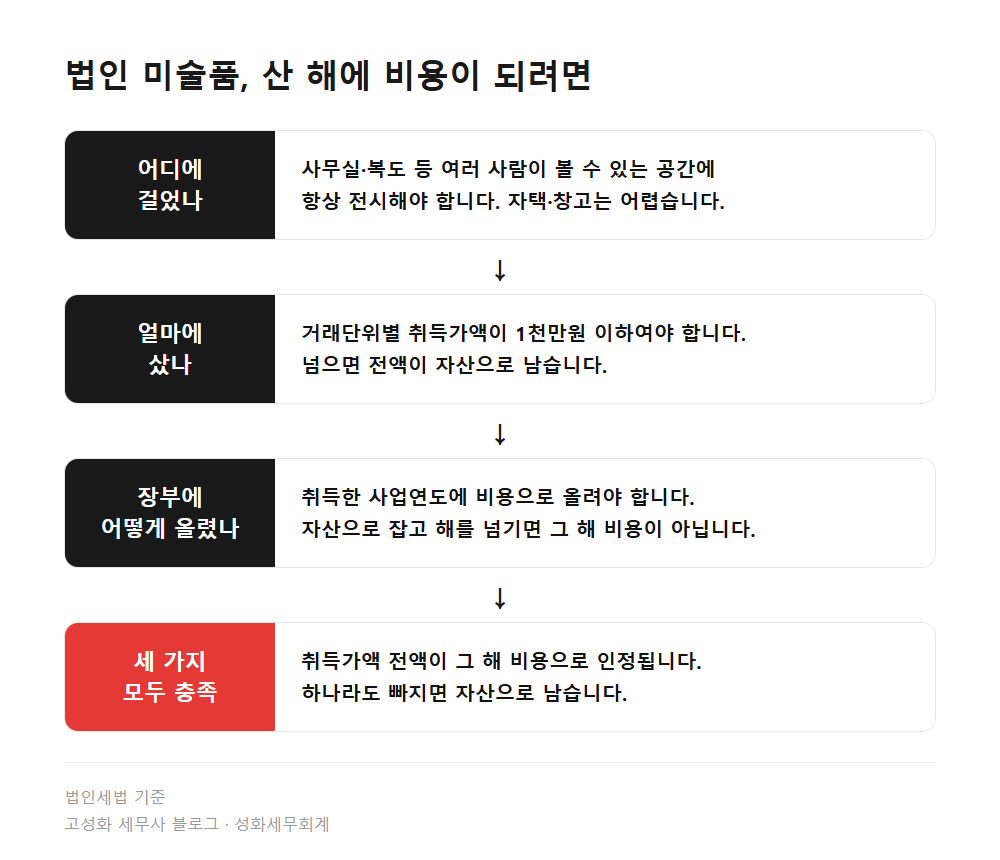
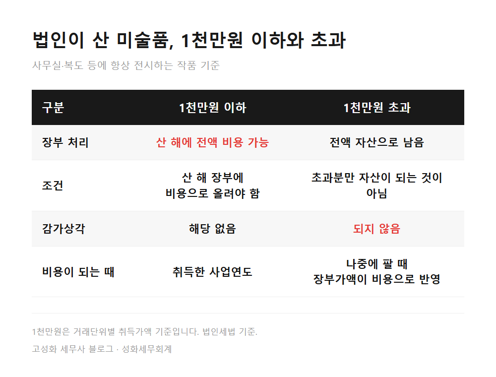
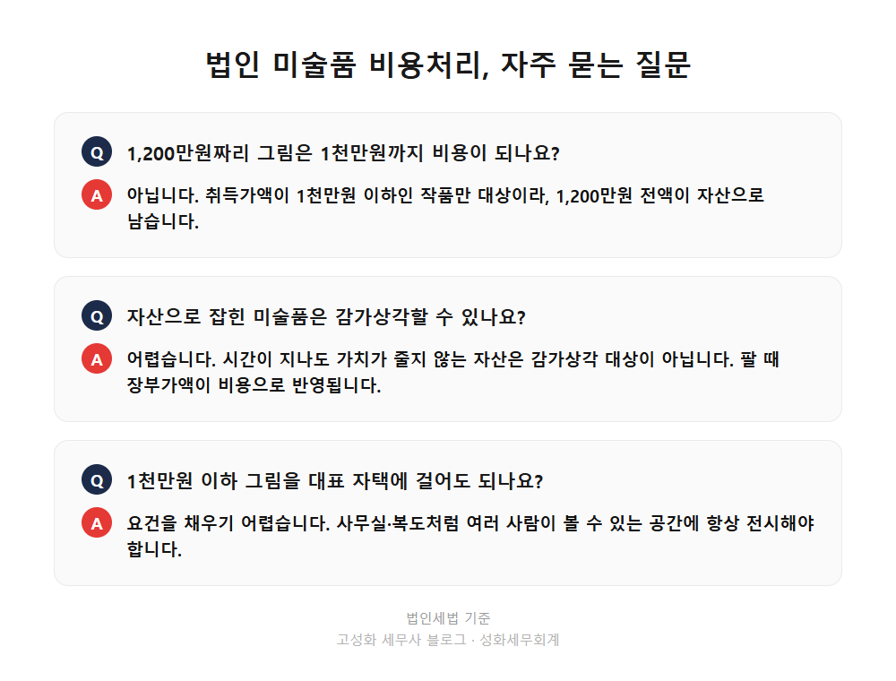

법인 미술품 비용처리 1천만원, 대표실에 걸면 될까 2편

법인이 산 미술품은 세 가지를 모두 채울 때 산 해에 전액 비용으로 인정됩니다. 사무실이나 복도처럼 여러 사람이 볼 수 있는 공간에 항상 걸어둘 것, 한 번 거래한 가격이 1천만원 이하일 것, 산 해의 장부에 비용으로 올릴 것입니다. 대표 혼자 쓰는 방이나 자택에 둔 그림은 첫 번째 요건부터 채우기 어렵습니다.
지난 글에서는 개인이 그림을 팔 때 6천만원 기준과 생존 작가 예외를 정리했습니다. 이번에는 법인이 사는 쪽입니다.
이 글을 보고 계신 분은 ① 사무실에 걸 그림을 법인카드로 사려는 대표님 ② 이미 산 작품이 장부에 어떻게 잡혔는지 궁금한 분 ③ 갖고 있던 그림을 법인에 넘길까 생각 중인 분일 겁니다.
- 법인 미술품 비용처리, 1천만원 이하일 때 세 가지 요건
- 1천만원 넘는 미술품은 자산, 감가상각도 되지 않습니다
- 대표실·자택에 둔 그림, 개인 소장품을 법인에 넘길 때
한눈에 보기




자주 묻는 질문
1,200만원짜리 그림을 사면 1천만원까지는 비용처리가 되나요?
아닙니다. 취득가액이 1천만원 이하인 작품만 대상이라, 1,200만원 전액이 자산으로 남습니다.
자산으로 잡힌 미술품은 감가상각으로 나눠서 비용처리할 수 있나요?
어렵습니다. 시간이 지나도 가치가 줄지 않는 자산은 감가상각 대상이 아니고, 미술품은 여기에 해당하는 것으로 봅니다. 팔 때 장부가액이 비용으로 반영됩니다.
1천만원 이하 그림을 대표 자택에 걸어도 비용처리가 되나요?
요건을 채우기 어렵습니다. 사무실·복도처럼 여러 사람이 볼 수 있는 공간에 항상 전시해야 하고, 그렇지 않은 서화는 업무무관 자산으로 분류될 수 있습니다.
정리하면
법인 미술품 비용처리는 1천만원이라는 숫자 하나로 끝나지 않습니다. 어디에 걸었는지, 거래단위별 가격이 얼마인지, 산 해 장부에 비용으로 올렸는지를 함께 봐야 합니다. 1천만원을 넘으면 전액 자산으로 남고 감가상각도 되지 않습니다.
우리 법인의 그림이 어디에 해당하는지는 전시 장소, 계약 단위, 장부 처리, 그리고 누구에게서 샀는지를 같이 봐야 정확합니다. 이미 사서 걸어둔 그림이라 늦었다고 생각하실 수 있는데, 그 해 결산을 마치기 전이라면 장부 처리를 다시 살펴볼 수 있습니다. 계약서와 걸어둔 자리 사진만 보내주셔도 됩니다.
본문 전체와 근거 조문은 블로그에서 확인하실 수 있습니다.